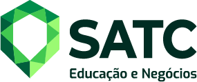

Bem-vindo ao meu site
Eu me chamo Pedro Otávio Ramos de Jesus e estou estudando Engenharia da Computação na faculdade

Sobre mim
Tenho facilidade para o trabalho em equipe e para o aprendizado de novas tecnologias, com conhecimentos nas áreas listadas abaixo. No momento, estou em busca do meu primeiro emprego na área de tecnologia. Tenho interesse em construir uma carreira em DevOps e Engenharia de Dados, onde eu possa agregar valor à empresa e me desenvolver profissionalmente.
Minhas habilidades
Linguagens de Programação: Python, C, C++, C#, JavaScript
Desenvolvimento Web: HTML, CSS, Node.js
Conceitos Fundamentais: Programação Orientada a Objetos (POO), Estruturas de Dados, Banco de Dados, Rede de Computadores, Circuitos Digitais, Algoritmos e Lógica de Programação.
Ferramentas de Desenvolvimento: Git/GitHub, Visual Studio Code, SQL, JSON, Docker
Ferramentas de Escritório: Google Workspace, Pacote Office, I.A
Idiomas: Inglês avançado (leitura, escrita, conversação e compreensão auditiva).
Meus projetos
No meu GitHub (https://github.com/PedroRDJ), você poderá ver meus projetos.